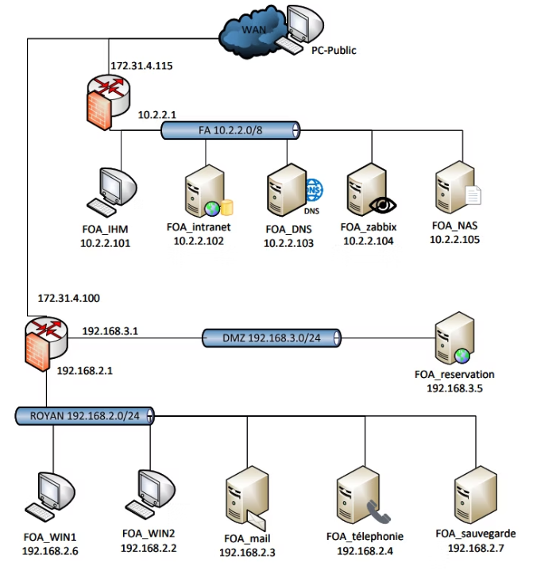

Contexte du projet
Ce projet collectif avait pour objectif de moderniser l'infrastructure informatique du Musée Gallo-Romain de Fâ, une organisation répartie sur deux sites distincts :
- Le siège administratif situé à Royan
- Le parc archéologique implanté à Fâ
Le but principal était de respecter un cahier des charges exigeant, en assurant un haut niveau de sécurité, une disponibilité des services à 99 %, ainsi qu'une utilisation fluide et intuitive pour l'ensemble des collaborateurs.
Méthode de travail
L'utilisation de la méthode Kanboard a permis d'améliorer l'organisation du projet en offrant une vision claire et en temps réel de l'avancement des tâches, tout en facilitant la collaboration et la gestion des priorités au sein de l'équipe.
Voir le tableau KanboardArchitecture réseau
L'infrastructure a été conçue pour interconnecter les deux sites de façon sécurisée via un tunnel VPN site-à-site, avec une segmentation réseau claire par VLANs.
Site Royan
- Réseau LAN administratif
- Serveur Active Directory principal
- Pare-feu pfSense (passerelle)
- VLAN direction / VLAN staff
Lien inter-sites
- Tunnel VPN site-à-site
- Chiffrement des flux
- Routage inter-VLAN sécurisé
Site Fâ (Parc)
- Réseau LAN visiteurs / staff
- Contrôleur de domaine secondaire
- Pare-feu pfSense local
- DMZ pour services publics
Schéma de l'infrastructure

Réalisations techniques
Active Directory & GPO
Déploiement d'un domaine Windows Server avec gestion des utilisateurs, des groupes et des stratégies de groupe (GPO) pour l'ensemble du personnel des deux sites.
Pare-feu pfSense
Configuration des règles de filtrage, NAT, et du tunnel VPN site-à-site entre Royan et Fâ pour sécuriser les communications inter-sites.
Segmentation LAN / DMZ
Mise en place de VLANs pour isoler les réseaux administratif, visiteurs et serveurs. Déploiement d'une DMZ pour héberger les services accessibles depuis l'extérieur.
Serveurs Linux
Installation et configuration de serveurs Linux Debian pour les services réseau (DNS, DHCP, partage de fichiers Samba) sur les deux sites.
Supervision avec Zabbix
Déploiement de Zabbix pour superviser en temps réel l'ensemble des équipements réseau et serveurs des deux sites, avec alertes automatiques.
Automatisation PowerShell
Développement de scripts PowerShell pour automatiser la création de comptes utilisateurs, la gestion des droits et les tâches d'administration répétitives.